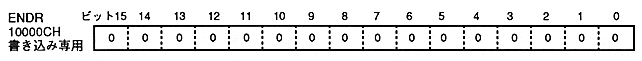

The drawing forced end register (ENDR, End register) forcibly ends drawing. This is a write-only 16-bit register at the 10000CH address.

Draw drawing end: draw end
Forcibly suspends the current drawing.
The drawing of the frame is forcibly terminated within about 30 clocks after the data is written to the register.
Specify 0000H for the write data.
Drawing that ended in the middle of drawing cannot be drawn continuously.
If the amount of data to be drawn is large and the drawing does not end within one frame, the drawing is divided into two or more using pseudo drawing continuation. Use this drawing forced termination to forcibly terminate drawing while continuing this pseudo rendering. For details, refer to “ 4.8 Current processing table address register ”.